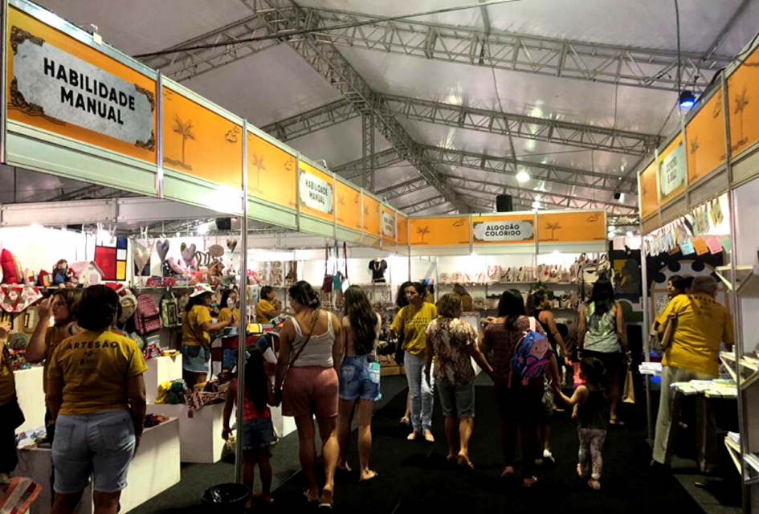
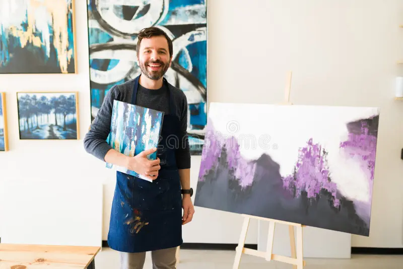
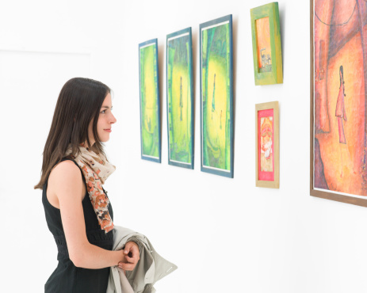

Sofia está em um café, olhando pela janela, sonhando com o amor verdadeiro.

O garçom compartilha uma história romântica que a inspira.
Sofia se inscreve em um grupo de leitura para conhecer novas pessoas.
Sofia descobre que o amor não esta apenas em pessoas mas sim em pequenas coisas

Sofia se perde nas ruas e encontra uma feira de artesanato.
Sofia começa a escrever um diário sobre seus sentimentos.

O artista a convida para uma exposição na galeria.

Sofia compra um quadro que a faz sentir-se feliz.
Sofia descobre que o amor verdadeiro começa com o amor-próprio.

Na galeria, Sofia conhece alguém especial que compartilha suas paixões.
Sofia se ve frustrada pois não teve nenhuma reflexão ou algo produtivo que pode tirar disso